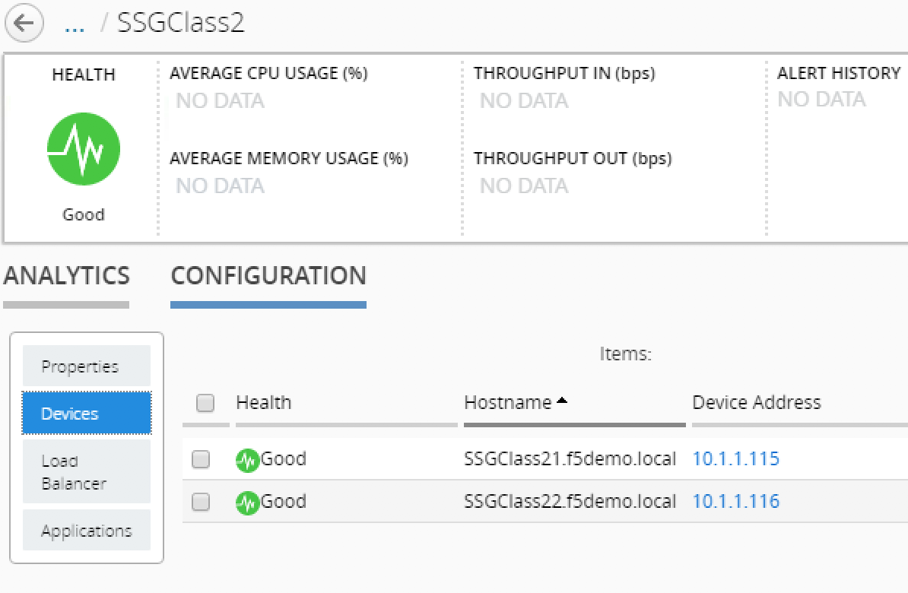

Lab 1.4: Troubleshoot a SSG¶
In this lab, we will show you how to monitor/troubleshoot your SSG.
To track the activities related to your SSG (deployment, scale-in, scale-out, delete), you can track two files on your BIG-IQ:
/var/log/restjavad.0.log: in this file, you will be able to review and track all the actions done between BIG-IQ and your Cloud Provider (here VMWare)/var/log/orchestrator.log: in this file, you will be able to review and track all the actions done via ansible to deploy your SSG
Since we launched our SSG in the previous lab, you should start seeing logs in your two SSH sessions (opened during the previous lab)
example of logs for tail -f /var/log/restjavad.0.log | grep vmware
[INFO][19 Apr 2018 19:37:20 CEST][/cm/cloud/tasks/vmware/scaling/3de355e4-ea9f-46a6-8d0d-e02fb99e4c21/worker VmwScalingTaskWorker] Advancing from GET_PROVIDER to VALIDATE_SSG
[INFO][19 Apr 2018 19:37:20 CEST][/cm/cloud/tasks/vmware/scaling/3de355e4-ea9f-46a6-8d0d-e02fb99e4c21/worker VmwScalingTaskWorker] Advancing from VALIDATE_SSG to CREATE_ASM_KEYS
[INFO][19 Apr 2018 19:37:21 CEST][/cm/cloud/tasks/vmware/scaling/3de355e4-ea9f-46a6-8d0d-e02fb99e4c21/worker VmwScalingTaskWorker] Updated service scaling group 'SSGClass2'
[INFO][19 Apr 2018 19:37:21 CEST][/cm/cloud/tasks/vmware/scaling/3de355e4-ea9f-46a6-8d0d-e02fb99e4c21/worker VmwScalingTaskWorker] Advancing from CREATE_ASM_KEYS to ADD_DEVICE
[INFO][19 Apr 2018 19:37:21 CEST][/cm/cloud/tasks/vmware/scaling/3de355e4-ea9f-46a6-8d0d-e02fb99e4c21/worker VmwScalingTaskWorker] Starting scale-out for service scaling group 'SSGClass2'
[INFO][19 Apr 2018 19:37:21 CEST][/cm/cloud/tasks/vmware/scale-out/ef16b0f9-ddfa-41d0-90a1-bc6ce747f513/worker VmwScaleOutTaskWorker] Advancing from GET_SSG to GET_ENVIRONMENT
[INFO][19 Apr 2018 19:37:21 CEST][/cm/cloud/tasks/vmware/scale-out/ef16b0f9-ddfa-41d0-90a1-bc6ce747f513/worker VmwScaleOutTaskWorker] Advancing from GET_ENVIRONMENT to GET_PROVIDER
[INFO][19 Apr 2018 19:37:21 CEST][/cm/cloud/tasks/vmware/scale-out/ef16b0f9-ddfa-41d0-90a1-bc6ce747f513/worker VmwScaleOutTaskWorker] Advancing from GET_PROVIDER to VALIDATE_SSG
[INFO][19 Apr 2018 19:37:22 CEST][/cm/cloud/tasks/vmware/scale-out/ef16b0f9-ddfa-41d0-90a1-bc6ce747f513/worker VmwScaleOutTaskWorker] Advancing from VALIDATE_SSG to CREATE_GUEST
[INFO][19 Apr 2018 19:37:22 CEST][/cm/cloud/tasks/vmware/scale-out/ef16b0f9-ddfa-41d0-90a1-bc6ce747f513/worker VmwScaleOutTaskWorker] Polling: /mgmt/cm/cloud/orchestrator/vmware/tasks/create-vm/240e36ea-c342-49c8-823f-b984723c57ed
example of logs for tail -f /var/log/orchestrator.log
2018-04-19 07:33:47 PM Job "reapIt (trigger: interval[0:10:00], next run at: 2018-04-19 19:43:47 CEST)" executed successfully
2018-04-19 07:33:47 PM Running job "reapIt (trigger: interval[0:10:00], next run at: 2018-04-19 19:43:47 CEST)" (scheduled at 2018-04-19 19:33:47.845403+02:00)
2018-04-19 07:33:47 PM Job "reapIt (trigger: interval[0:10:00], next run at: 2018-04-19 19:43:47 CEST)" executed successfully
2018-04-19 07:37:22 PM Provisioning VM in VMWare...
2018-04-19 07:37:22 PM post_item_state({"status": "STARTED", "kind": "cm:cloud:orchestrator:vmware:tasks:create-vm:createvmtaskitemstate", "generation": 0, "lastUpdateMicros": 0, "environmentReference": {"link": "https://localhost/mgmt/cm/cloud/environments/3d906980-66a7-3d24-aff4-2029ced9f27b"}, "startDateTime": "2018-04-19T17:37:22+0000", "vmName": "SSGClass2-3f91f63b-6369-4edd-85c1-df229c8b4669", "id": "240e36ea-c342-49c8-823f-b984723c57ed", "selfLink": "https://localhost:8000/mgmt/cm/cloud/orchestrator/vmware/tasks/create-vm/240e36ea-c342-49c8-823f-b984723c57ed"})
2018-04-19 07:37:22 PM PID = 17699
2018-04-19 07:37:22 PM post_item_state({"status": "STARTED", "kind": "cm:cloud:orchestrator:vmware:tasks:create-vm:createvmtaskitemstate", "generation": 0, "lastUpdateMicros": 0, "pid": 17699, "environmentReference": {"link": "https://localhost/mgmt/cm/cloud/environments/3d906980-66a7-3d24-aff4-2029ced9f27b"}, "startDateTime": "2018-04-19T17:37:22+0000", "vmName": "SSGClass2-3f91f63b-6369-4edd-85c1-df229c8b4669", "id": "240e36ea-c342-49c8-823f-b984723c57ed", "selfLink": "https://localhost:8000/mgmt/cm/cloud/orchestrator/vmware/tasks/create-vm/240e36ea-c342-49c8-823f-b984723c57ed"})
2018-04-19 07:37:23 PM Fetching environment configuration from BIG-IQ
2018-04-19 07:37:23 PM Create VM on vCenter
2018-04-19 07:37:24 PM start task = TASK: Create VM
Here we can see that we are creating a VM. Go to your vCenter interface and check that a VM is getting cloned

Warning
potentially redo the screenshot once we have the right template name and also take a screenshot of the provisioned VM in the purple folder
Note
Here we can see that only a single VM is getting cloned even if we requested 2 minimum/required instances. This is because we will do it in a sequential manner (one after the other)
Once your VM is cloned and starting, you should see something like this in
your orchestrator.log file
2018-04-19 07:48:14 PM Wait for management ip and retrieve vm info
2018-04-19 07:48:14 PM start task = TASK: Poll VM info for management IP
2018-04-19 07:48:16 PM Ansible task retry...
2018-04-19 07:48:28 PM Ansible task retry...
2018-04-19 07:48:40 PM Ansible task retry...
2018-04-19 07:48:53 PM Ansible task retry...
Here your VM is starting and ansible waits for it to be up and that it retrieved
a Management IP address (provided through DHCP)
Note
- You can open a VMWare console of your new VM instance to track its booting
- process
Once your VM has a management IP address, Ansible will enforce the information that have been define in your device template.
You should see this kind of log in your /var/log/restjavad.0.log file
[INFO][19 Apr 2018 19:50:32 CEST][/cm/cloud/tasks/vmware/scale-out/ef16b0f9-ddfa-41d0-90a1-bc6ce747f513/worker VmwScaleOutTaskWorker] Device 10.1.1.115 created (SSGClass2-3f91f63b-6369-4edd-85c1-df229c8b4669 / 4235e453-adbb-0d44-d28f-aa8ab70bf2eb)
[INFO][19 Apr 2018 19:50:32 CEST][/cm/cloud/tasks/vmware/scale-out/ef16b0f9-ddfa-41d0-90a1-bc6ce747f513/worker VmwScaleOutTaskWorker] Updated service scaling group 'SSGClass2'
[INFO][19 Apr 2018 19:50:32 CEST][/cm/cloud/tasks/vmware/scale-out/ef16b0f9-ddfa-41d0-90a1-bc6ce747f513/worker VmwScaleOutTaskWorker] Advancing from CREATE_GUEST to RESET_DEFAULT_PASSWORDS
[INFO][19 Apr 2018 19:50:33 CEST][/cm/cloud/tasks/vmware/scale-out/ef16b0f9-ddfa-41d0-90a1-bc6ce747f513/worker VmwScaleOutTaskWorker] Device template does not specify root password; random password will be used
[INFO][19 Apr 2018 19:50:33 CEST][/cm/cloud/tasks/vmware/scale-out/ef16b0f9-ddfa-41d0-90a1-bc6ce747f513/worker VmwScaleOutTaskWorker] Using admin password specified in device template
[INFO][19 Apr 2018 19:51:19 CEST][/cm/cloud/tasks/vmware/scale-out/ef16b0f9-ddfa-41d0-90a1-bc6ce747f513/worker VmwScaleOutTaskWorker] Advancing from RESET_DEFAULT_PASSWORDS to WAIT_FOR_DEVICE_READY
[INFO][19 Apr 2018 19:51:21 CEST][/cm/cloud/tasks/vmware/scale-out/ef16b0f9-ddfa-41d0-90a1-bc6ce747f513/worker VmwScaleOutTaskWorker] Device 10.1.1.115 is a BIG-IP running version 13.1.0.5 build 0.0.5
[INFO][19 Apr 2018 19:51:33 CEST][/cm/cloud/tasks/vmware/scale-out/ef16b0f9-ddfa-41d0-90a1-bc6ce747f513/worker VmwScaleOutTaskWorker] Advancing from WAIT_FOR_DEVICE_READY to APPLY_DEVICE_TEMPLATE
[INFO][19 Apr 2018 19:51:34 CEST][/cm/cloud/tasks/vmware/scale-out/ef16b0f9-ddfa-41d0-90a1-bc6ce747f513/worker VmwScaleOutTaskWorker] Polling: /mgmt/cm/cloud/orchestrator/devicetemplate/6e39e51e-86d7-468d-8676-bf2ec4d4c999
You should see this kind of log in your /var/log/orchestrator.log file
2018-04-19 07:51:47 PM start task = TASK: Gathering Facts
2018-04-19 07:51:52 PM Ansible callback on OK. result.rc=None
2018-04-19 07:51:52 PM start task = TASK: name: test connection to BIG-IP
2018-04-19 07:51:54 PM Ansible callback on OK. result.rc=None
2018-04-19 07:51:54 PM start task = TASK: build launch command
2018-04-19 07:51:54 PM Ansible callback on OK. result.rc=None
2018-04-19 07:51:54 PM start task = TASK: copying f5-cloud-libs to device
2018-04-19 07:52:19 PM Ansible callback on OK. result.rc=None
2018-04-19 07:52:19 PM start task = TASK: change hostname to SSGClass21.f5demo.local
2018-04-19 07:52:54 PM Ansible callback on OK. result.rc=0
2018-04-19 07:52:54 PM start task = TASK: setting dns server to 8.8.4.4
2018-04-19 07:53:03 PM Ansible callback on OK. result.rc=0
2018-04-19 07:53:03 PM start task = TASK: setting ntp server to pool.ntp.org
2018-04-19 07:53:08 PM Ansible callback on OK. result.rc=0
2018-04-19 07:53:08 PM start task = TASK: setting user accounts to user:admin,role:admin
2018-04-19 07:53:21 PM start task = TASK: change the management ssl port to 443
2018-04-19 07:53:25 PM Ansible callback on OK. result.rc=0
2018-04-19 07:53:25 PM start task = TASK: setting provisioned modules to ltm:nominal
2018-04-19 07:53:30 PM Ansible callback on OK. result.rc=0
Once this VM is fully onboarded, you will be able to see that we will start provisioning another VM to reach our target of 2 devices for our SSG
Warning
take a screenshot of our vmware console where the second instance get cloned
We will know your SSG is done being deployed when you’ll see such log files in
/var/log/restjavad.0.log
[INFO][19 Apr 2018 20:11:52 CEST][/cm/cloud/tasks/vmware/scaling/3de355e4-ea9f-46a6-8d0d-e02fb99e4c21/worker VmwScalingTaskWorker] Advancing from ADD_DEVICE to FINISHED
[INFO][19 Apr 2018 20:11:52 CEST][/cm/cloud/tasks/vmware/scaling/3de355e4-ea9f-46a6-8d0d-e02fb99e4c21/worker VmwScalingTaskWorker] Updating service scaling group 'SSGClass2' status to ready
[INFO][19 Apr 2018 20:11:52 CEST][/cm/cloud/tasks/vmware/scaling/3de355e4-ea9f-46a6-8d0d-e02fb99e4c21/worker VmwScalingTaskWorker] Updated service scaling group 'SSGClass2'
[INFO][19 Apr 2018 20:11:52 CEST][/cm/cloud/tasks/vmware/scaling/3de355e4-ea9f-46a6-8d0d-e02fb99e4c21/worker VmwScalingTaskWorker] Finished scaling task for service scaling group 'SSGClass2' to create 2 and remove 0 device(s)
At this stage, if you check the status of your SSG in your BIG-IQ (Go to Applications > Service Scaling Groups), you will see this:

Once it is fully deployed, you’ll see this:

Note
Here you can see for the devices: 2/3 - you see the number of provisioned VEs and the max number of VEs that you’re allowed to deploy in this SSG
While our SSG finish to be provisioned, go to Applications > Service Scaling
Groups and click on your SSG (SSGClass2)

This is the interface to monitor the status and performance of your SSG. Click on Configuration
The properties page will give you access to the previously defined parameters related to your SSG
If you click on Devices, You’ll be able to review the devices deployed and their Management IP address.
{kind=link}
If you click on the management IP address of the devices. It will
open a new tab to access its UI. Do it and connect to the BIG-IP.
Note
Remember that we changed the default admin password to purple
{kind=link}
Browse through the BIG-IP UI to review the configuration that should have been pushed:
- DNS & NTP
- modules provisioned
- VLANs
- Self-IPs
Warning
review if the DHCP in UDF push a DNS server. it would overwrite the device template
Note
if you go to your BIG-IQ UI and go to Devices > BIG-IP Devices , you will not be able to see your SSG devices. They won’t be listed here.